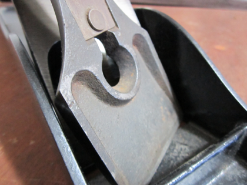
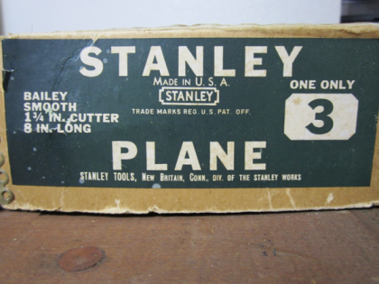

Identification Step 1
Number of Patent Dates on Bed?

Zero Patent Dates On Bed
Is there a raised ring under the knob?

No Patent Date On Bed and Raised Ring
No Patent Date On Bed and No Raised Ring
Is the Model cast into the bed? e.g. No. 5

No Patent Date On Bed and No Raised Ring and No Model Cast On Bed.
Does the lever cap have a recessed back?

No Patent Date On Bed and No Raised Ring and No Model Cast On Bed and No Recessed Lever Cap.
Depth Adjustment nut stamped 'Bailey's Patent'?
No Patent Date On Bed and No Raised Ring and No Model Cast On Bed and Recessed Lever Cap.
Arched rear of frog receiver?
No Patent Date On Bed and No Raised Ring and Model Cast On Bed.
How Many Patent Dates on Lateral Adjustment Lever?
No Patent Date On Bed and No Raised Ring and Model Cast On Bed and No Patent Dates On Lateral Adjustment Lever.
Stanley stamped into the lateral adjustment Lever?

No Patent Date On Bed and No Raised Ring and Model Cast On Bed and No Patent Dates On Lateral Adjustment Lever.
Depth Adjustment nut stamped 'Bailey's Patent'?
One Patent Date On Bed
Is there a raised ring under the knob?
Two Patent Dates On Bed
Is the frog rib large and arched?
Three Patent Dates On Bed
What size depth adjustment knob is there?
Stanley Hand Plane Models
- A (Prefix)
- Aluminum
- C (Subscript)
- Corrugated
- G (Prefix)
- Gage
- H (Prefix)
- Handyman
- M
- Malleable
- P (Subscript)
- Plane (Used when duplicate models existed in catalog)
- Years
- Stanley bought Bailey in 1869 and the first catalog was in 1870.
- Stanley (branded packaging) planes could have been built in late 1869.
Smooth Bottom
Corrugated
Stanley No. 1 Hand Plane
The rarest plane
- 1870 - 1943
- Smoothing Plane
- Length: 5-1/2 inches
- Width of cutter: 1-1/4 inches
- Weight: 1-1/8 LBs
- No lateral adjustment feature
Stanley No. 2 Hand Plane
- 1870 - 1958
- Smoothing Plane
- Length: 7 inches
- Width of cutter: 1-5/8 inches
- Weight: 2-1/4 LBs
Stanley No. 3 Hand Plane
- 1870 - 1973
- Smoothing Plane
- Length: 8 inches
- Width of cutter: 1-3/4 inches
- Weight: 3-1/8 LBs

Stanley No. 4 Hand Plane
- 1870 - 1973
- Smoothing Plane
- Length: 9 inches or 9-1/4 inches
- Width of cutter: 2 inches
- Weight: 3-3/4 LBs
Stanley No. 4 Hand Plane
- 1884 - 1958
- Smoothing Plane
- Length: 10 inches
- Width of cutter: 2-3/8 inches
- Weight: 4-3/4 LBs
Stanley No. 5 Hand Plane
- 1870 - 1973
- Jack Plane
- Length: 14 inches
- Width of cutter: 2 inches
- Weight: 4-3/4 LBs
Stanley No. 5 1/4 Hand Plane
- 1922 - 1973
- Jack Plane
- Length: 11-1/2 inches
- Width of cutter: 1-3/4 inches
- Weight: 3-3/4 LBs
Stanley No. 5 1/2 Hand Plane
- 1898 - 1962
- Jack Plane
- Length: 15 inches
- Width of cutter: 2-1/4 inches, after 1939 2-3/8 inches
- Weight: 6-3/4 LBs
Stanley No. 6 Hand Plane
- 1870 - 1973
- Fore Plane
- Length: 18 inches
- Width of cutter: 2-3/8 inches
- Weight: 7-3/4 LBs
Stanley No. 7 Hand Plane
- 1870 - 1973
- Jointer Plane
- Length: 22 inches
- Width of cutter: 2-3/8 inches
- Weight: 8-1/8 LBs
Stanley No. 8 Hand Plane
- 1870 - 1958
- Jointer Plane
- Length: 24 inches
- Width of cutter: 2-5/8 inches
- Weight: 9-3/4 LBs
Stanley No. 2 Hand Plane Corrugated
- 1898 - 1943
- Smoothing Plane
- Length: 7 inches
- Width of cutter: 1-5/8 inches
- Weight: 2-1/4 LBs
Stanley No. 3 Hand Plane Corrugated
- 1898 - 1972
- Smoothing Plane
- Length: 8 inches
- Width of cutter: 1-3/4 inches
- Weight: 3-1/8 LBs
Stanley No. 4 Hand Plane Corrugated
- 1898 - 1973
- Smoothing Plane
- Length: 9 inches or 9-1/4 inches
- Width of cutter: 2 inches
- Weight: 3-3/4 LBs
Stanley No. 4 1/2 Hand Plane Corrugated
- 1898 - 1958
- Smoothing Plane
- Length: 10 inches
- Width of cutter: 2-3/8 inches
- Weight: 4-3/4 LBs
Stanley No. 5 Hand Plane Corrugated
- 1898 - 1973
- Jack Plane
- Length: 14 inches
- Width of cutter: 2 inches
- Weight: 4-3/4 LBs
Stanley No. 5 1/4 Hand Plane Corrugated
- 1922 - 1942
- Jack Plane
- Length: 11-1/2 inches
- Width of cutter: 1-3/4 inches
- Weight: 3-3/4 LBs
Stanley No. 5 1/2 Hand Plane Corrugated
- 1898 - 1958
- Jack Plane
- Length: 15 inches
- Width of cutter: 2-1/4 inches, after 1939 2-3/8 inches
- Weight: 6-3/4 LBs
Stanley No. 6 Hand Plane Corrugated
- 1898 - 1973
- Fore Plane
- Length: 18 inches
- Width of cutter: 2-3/8 inches
- Weight: 7-3/4 LBs
Stanley No. 7 Hand Plane Corrugated
- 1898 - 1964
- Jointer Plane
- Length: 22 inches
- Width of cutter: 2-3/8 inches
- Weight: 8-1/8 LBs
Stanley No. 8 Hand Plane Corrugated
- 1898 - 1958
- Jointer Plane
- Length: 24 inches
- Width of cutter: 2-5/8 inches
- Weight: 9-3/4 LBs
Stanley Hand Plane Types
Type 1
1867? - 1869
- Made in Boston USA.
- Stanley bought Bailey in 1869.
Type 2
1869 - 1872
Stanley bought Bailey in 1869
Type 3
1872 - 1873
Type 4
1874 - 1884
Type 5
1885 - 1888
- Lateral adjustment lever appears Patents 111890, 173177, 306877 and 386509
Type 6
1888 - 1892
Type 7
1893 - 1899
Type 8
1899 - 1902
Type 9
1902 - 1907
- “Bailey” appears on bed.
- Two Patent Dates on bed
- Has Lateral adjustment lever
- Redesigned frog (two step)
Type 10
1907 - 1909
Two Patent Dates
Type 11
1910 - 1918
- Three Patent Dates
- Lateral adjustment lever
- Frog adjustment screw appears
Type 12
1919 - 1924
- First of “Sweetheart” types.
- Three Patent Dates
- Lateral adjustment lever
- 1922 introduced the taller front knob
Type 13
1925 - 1928
- Sweetheart Lateral adjustment lever
- “Stanley” appears on lever cap.
- One Patent Date
- 1922 introduced the taller front knob
Type 14
1929 - 1930
- “Made in USA” on bed appears
- Sweetheart
- Lateral adjustment lever
- 1922 introduced the taller front knob
Type 15
1931 - 1932
- “Made in USA” on bed
- Lateral adjustment lever
- Last of the Sweethearts
- 1922 introduced the taller front knob
Type 16
1933 - 1941
- “Made in USA” on bed
- Kidney shaped lever cap hole. (Patent 1933)
- Lateral adjustment lever
- Raised Ring for front knob added
- 1922 introduced the taller front knob
Type 17
1942 - 1945
- War production
- Often without frog adjust
- Steel or hard rubber adjustment nut
- 1922 introduced the taller front knob
Type 18
1946 - 1947
Type 19
1948 - 1961
Type 20
1962 - 1967
Blue Paint
Type 20
1968 - 19??
Red Paint
Frequently Asked Questions (FAQ)
- Plane says Bailey not Stanley, is this a Stanley plane?
- Yes, Bailey is a reference to the style and creator of the design.
- Stanley name was added to the lateral adjustment lever and later the cap.
- It is strange it was never added to the bed.
- The threads on some of the plane parts are strange, how do I repair them?
- Some threads are Whitworth style with a slightly different size and degree of thread.
- Look for BSW or Whitworth Tap and Dies.
- British Standard Whitworth Wikipedia page.
- For better or worse, Whitworth was the first "Standardized" thread adopted by industries.
- Attempting to identify a plane and nothing matches up, what is wrong?
- It is possible that parts have been swapped or replaced over the past century.
- What wood is the tote and knob handles made of?
- It can vary but Rosewood is the most common. From Brazil or India.
- Rosewood was/is over-harvested and difficult to get these days.
- What Types(series) of Stanley plane is the most useful for woodworking?
- Books mention that type 12 and up are most useful.
- Anything with the lateral adjustment lever will work well.
- What is Japanning on a Stanley plane?
- Japanning is a method of painting where a finish is also heated to cure for a durable finish.
- Modern paints can mimic the finish. Collectors want original Japanning.
- Japanning Wikipedia Page
- Where can I find new blades for my plane?
- Stanley irons/blades can be found. Often as new old stock.
- Hock is a modern brand for plane irons.
- Remember to search for irons, and blades.
- I have bought damaged or incomplete planes just for the quality irons in them.
- Wood body planes and transitional planes can be found with quality original irons.
- Why are there corrugated bottom planes?
- There are situations where the corrugated bottom offered less resistance on the wood.
- Depends on the wood and the task.
- Is a Jack plane a scrub plane?
- It can be. Scrub planes are about the shape of the iron/blade.
- Typically sharpened with a radius to remove more wood in the center.
- Why are hand planes still in use today?
- Control and finish quality. A good sharp plane or scraper does not require sanding.
- Quiet and safety are also great reasons. No hearing protection needed.
Stanley Hand Plane Information and Identification
Do you need or want more information about Stanley hand planes? You are in the right place.
Resources and Credits:
- The Stanley Plane by Alvin Sellens 1975 Published by The Early American Industries Association ISBN 10: 0961206802 / ISBN 13: 9780961206802
- Stanley Tools Education Department Chart No. C115
- My extensive collection of vintage tools.